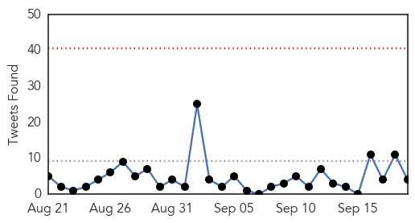
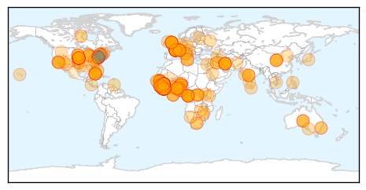

30 Day Trends
Web: 0 alerts, 0 warnings
Twitter: 0 alerts, 0 warnings
Top Articles:
- 1.000
- Ebola fear infects campuses, affects mobile students
- 1.000
- What is Ebola? Your questions answered – and how UNICEF is helping
- 1.000
- Ebola death toll hits 2,630, Sierra Leone in lockdown
- 1.000
- Ebola Patients Buying Survivors' Blood from Black Market, WHO Warns, Articles
- 1.000
- Sierra Leone shuts down for 3 days to slow Ebola
- 1.000
- Worst Ebola outbreak on record tests global response
- 1.000
- CHRONOLOGY-Worst Ebola outbreak on record tests global response
- 1.000
- Lessons from the Hot Zone
- 1.000
- Ebola Could Mutate Into Airborne Virus
- 1.000
- From African boy to epidemic killing 1000s
- 1.000
- Nam donates to Ebola fight
- 1.000
- 11 Numbers that unveil the 'enormity' caused by World's worst Ebola Outbreak
- 1.000
- Over 700 new Ebola cases reported in one week
- 1.000
- British Ebola survivor flies to US for blood donation
- 1.000
- The Ebola virus outbreak in West Africa is the worst in history
- 1.000
- Ebola aid workers murdered in remote Guinea
- 1.000
- Sierra Leone begins 72-hour lockdown to combat spread of Ebola
- 1.000
- The most from the coast
- 1.000
- Sierra Leone in three day shutdown over ebola disease
- 1.000
- Ebola: joint UN assessment response team heads to Liberia
- 1.000
- Durham prepared for Ebola
- 1.000
- Ebola: joint UN assessment response team heads to Liberia
- 1.000
- More Supplies Reaching Health Workers on Ebola Front Lines - Liberia
- 1.000
- Most Destructive Myths About Ebola Virus, Debunked
- 1.000
- Bodies of attacked doctors & journalists found in Guinea
- 1.000
- Eight members of Ebola prevention team killed in Guinea
- 1.000
- Sierra Leone Starts 'Lockdown' as UN Sounds Alarm on Ebola
- 0.999
- International solidarity in spotlight as efforts to contain Ebola outbreak gather momentum
- 0.999
- Official Numbers From WHO Confirm The Ebola Outbreak Isn’t Showing Any Signs Of Slowing Down
- 0.999
- WHO Continues Ebola Fight Despite Murders
- 0.999
- UN calls Ebola a threat to international peace
- 0.999
- UN calls Ebola a threat to international peace
- 0.999
- UN security council: Ebola threatens global peace, security
- 0.999
- Sierra Leone starts three-day shutdown to contain spread of Ebola disease
- 0.999
- Ebola puts a country in lockdown
- 0.999
- Ebola Crisis in West Africa: Ebola Campaign Team Murdered in Cold Blood as Sierra Leone
- 0.999
- No Ebola case in Trinidad, Health Ministry says after man shows symptoms
- 0.999
- Column: Ebola chaos is contagious
- 0.999
- 2,630 people have died so far from Ebola
- 0.999
- The Spread of Ebola
- 0.999
- Death toll in West Africa Ebola epidemic at 2,630
- 0.999
- Ebola Worst-Case Scenario Has More Than 500,000 Cases
- 0.999
- Ebola aid donated by UK to Sierra Leone
- 0.999
- Ebola worst-case scenario: Over half a million people infected — RT USA
- 0.999
- Sierra Leone to shut down for 3 days to slow Ebola
- 0.999
- Sierra Leone to shut down for 3 days to slow Ebola - National
- 0.999
- Ebola Patients Mistrust Health Workers
- 0.999
- Ebola outbreak: Guinea team found killed
- 0.999
- 'Deserted streets' as Ebola lockdown begins in Sierra Leone
- 0.999
- Death of medical workers a major blow to West Africa’s public health
Showing top 50 articles...
Top Tweets:
- 0.838
- RT: The number of people in West Africa who have died from Ebola doubled in the past month. http://t.co/zY4MT6JXRz
- 0.672
- New Ebola toll =400k?! Does that inc poss immunity (9% in 2006-08) and unreported cases? MT
- 0.652
- RT: Read about Grazia Caleo's experience working as an Ebola epidemiologist in Sierra Leone with http://t.co/qLp8Qij…
- 0.645
- MT: U.S. aid to fight Ebola in West Africa could build trust in the health care system: http://t.co/y3PlBtjwlZ
- 0.622
- RT: CVI: Determination of Specific Antibody Responses to the Six Species of Ebola and Marburg Viruses … Read more at http:/…
- 0.613
- RT: Just had chilling, vital talk w? @Laurie_Garrett on Ebola. Outbreak so wide, 400,000 people could be felled by end of ye…
- 0.595
- RT@cctvnewsafrica: China calls for coordinated int'l response to Ebola outbreak http://t.co/SSkXTzqRkL
Web/News Articles

Tweets
Article Locations
Article Confidences